Random Number Generator
Modern pseudorandom data generation with numpy.random.default_rng(), reproducible seeds, probability distributions, sampling, shuffling, and real-world Monte Carlo simulations.
📋 Table of Contents • Learning Roadmap
Is comprehensive lesson mein hum NumPy ke modern random engine ko absolute scratch se lekar production data science simulations tak step-by-step cover karenge:
default_rng() Architecture
B. Random Integers & Multi-Dimensional Arrays
C. Seeds & Reproducibility (State Advancement)
D. Uniform Continuous Distribution
E. Normal (Gaussian) Distribution
F. Sampling with rng.choice() & Weights
G. Shuffling, Permutations & ML Dataset Alignment
H. Binomial Distribution (Trials & Coin Tosses)
I. Poisson Distribution (Events in Time Slices)
J. Monte Carlo Probability Simulations
K. Additional Distributions (Exp, Beta, Geom, Multi)
L. 6 Real-Life Data Science Applications
M. 15 Common Traps & 8 Debugging Scenarios
N. Complete NumPy Random Architecture Map
O. 35 Practice Questions & Solutions
P. Capstone Mini-Project: Smart Random Lab
Q. Summary & Production Cheatsheet
🎲 0. Opening Story • Why Do Applications Need Randomness?
Imagine kijiye ki aap CodeVerse app par Python aur Data Science practice kar rahe hain. Har roz aap 10 practice questions solve karne aate hain. Agar app har roz bilkul wahi exact questions aur wahi exact sequence (Question 1, fir Question 2, fir Question 3...) dikhayi de, to kya hoga? Aapke answers ratte huye ban jayenge aur practice behad boring ho jayegi!
Lekin jab CodeVerse ek Random Question Selector implement karta hai, to har baar aapko 100 questions ke pool mein se naye, unpredictable questions milte hain. Aapka brain actively sochta hai aur real learning hoti hai.
- Gaming & Virtual Dice: Ludo, Monopoly ya RPG games mein dice roll karna ya card deck ko shuffle karna.
- Practice & Assessment Engines: Har student ko question paper ka randomized order provide karna taaki cheating na ho.
- Machine Learning: Training datasets ko Train/Test splits mein randomly partition karna aur weights ko randomly initialize karna.
- Scientific Simulations: Cloud rainfall patterns, retail store customer arrivals, ya stock market fluctuations ko simulate karna.
- Software QA Testing: Code ko stress-test karne ke liye thousands of random edge-case inputs feed karna.
Pseudorandom Numbers: Computer Randomness Kaise Banata Hai?
Pure physical randomness (jaise atmospheric noise ya radioactive decay) computers ke CPU mein naturally available nahi hoti. Isliye computers Pseudorandom Number Generators (PRNG) use karte hain. PRNG ek deterministic mathematical algorithm hota hai jo numbers ki aisi sequence calculate karta hai jo statistically pure random numbers jaisi behave karti hai.
secrets module use hota hai).
A Tiny First Example: Simulating 10 Dice Rolls
Chaliye ek digital dice roll karke dekhte hain:
import numpy as np # Modern recommended generator initialize karein rng = np.random.default_rng(seed=42) # 1 se 6 tak ke 10 dice rolls generate karein (upper bound 7 is excluded) rolls = rng.integers(1, 7, size=10) print("Ten dice rolls:", rolls) print("Data type:", rolls.dtype) print("Lowest roll:", rolls.min(), "| Highest roll:", rolls.max())
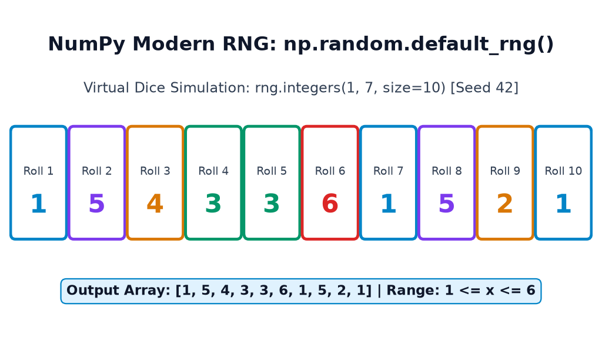
np.random.default_rng(42).⚙️ A. Understanding NumPy's Modern Random Generator
NumPy 1.17 se pehle pura world legacy functions use karta tha jaise np.random.randint() ya np.random.seed(). Yeh legacy functions ek shared global state par depend karte the jisse code race conditions aur statistical flaws se suffer karta tha.
Modern NumPy mein standard aur best practice hai Generator Object create karna:
rng = np.random.default_rng(seed=None) # Modern PCG64 BitGenerator
np.random.default_rng(): NumPy ka official constructor function jo ek dedicated Generator instance banata hai.rng: Yeh koi Python keyword nahi hai! Yeh sirf ek convenient variable name hai jiska matlab Random Number Generator hai. Aap chahein togen = np.random.default_rng()bhi likh sakte hain.- PCG64 Engine: Under the hood, modern NumPy PCG64 (Permuted Congruential Generator) bit-generator use karta hai jo legacy Mersenne Twister se vastly faster aur statistically superior hai.
- Best Practice: Ek application ya script mein sirf ek generator initialize karke usko reuse karna sabse clean aur performant approach hoti hai.
Example 1: Generating Random Integers with rng.integers()
rng.integers(low, high, size) half-open interval [low, high) se discrete uniform integers generate karta hai:
import numpy as np rng = np.random.default_rng(42) # 1 se 10 tak ke 8 integers (upper bound 11 is excluded) values = rng.integers(1, 11, size=8) print("Random integers [1, 10]:", values) print("Min value observed:", values.min()) print("Max value observed:", values.max())
Example 2: Generating Random Floating-Point Numbers with rng.random()
rng.random(size) interval [0.0, 1.0) (0 inclusive, 1 exclusive) se continuous floating-point values generate karta hai:
import numpy as np rng = np.random.default_rng(42) values = rng.random(8) print("Random floats in [0, 1):", np.round(values, 4)) print("Minimum:", round(float(values.min()), 4)) print("Maximum:", round(float(values.max()), 4))
Key Generator Methods Summary Table
| Method Name | Type | Default Interval / Parameters | Primary Use Case |
|---|---|---|---|
rng.integers(low, high, size) |
Discrete | [low, high) |
Dice rolls, discrete IDs, random array indexing |
rng.random(size) |
Continuous | [0.0, 1.0) |
Base probabilities, random thresholds, percentage simulations |
rng.uniform(low, high, size) |
Continuous | [low, high) |
Arbitrary range floating measurements, waiting times |
rng.normal(loc, scale, size) |
Continuous | Mean = loc, Std = scale |
Heights, test scores, sensor noise, financial returns |
rng.choice(a, size, replace, p) |
Categorical | From array / list a |
Random quiz selection, lottery, weighted user draws |
rng.shuffle(x) |
In-Place | Mutates array x |
Shuffling card decks or in-place order randomization |
rng.permutation(x) |
Returns Copy | Original x is unchanged |
Safe dataset row reordering without corrupting raw data |
rng.binomial(n, p, size) |
Discrete | n trials, success prob p |
Coin flips, quiz pass/fail counts, click conversions |
rng.poisson(lam, size) |
Discrete | Rate parameter lam |
Customer arrivals, server requests per minute |
🔢 B. Random Integers and Multi-Dimensional Arrays
NumPy ki sabse badi super-power hai ek single line mein multi-dimensional random arrays create karna. size parameter ko integer pass karne par 1D array banta hai, aur tuple pass karne par 2D, 3D ya N-D arrays generate hote hain.
1. Scalar vs 1D Array
Agar aap size argument omit kar dete hain, to NumPy ek single Python integer (scalar) return karta hai:
import numpy as np rng = np.random.default_rng(42) scalar_val = rng.integers(1, 100) # No size -> Single scalar integer array_1d = rng.integers(1, 100, size=5) # size=5 -> 1D NumPy array print("Scalar:", scalar_val, "| Type:", type(scalar_val)) print("1D Array:", array_1d, "| Shape:", array_1d.shape)
Example 1: Simulating 20 Dice Rolls & Range Inspection
import numpy as np rng = np.random.default_rng(42) # Dice faces: 1, 2, 3, 4, 5, 6 -> low=1, high=7 rolls = rng.integers(1, 7, size=20) print("Rolls:", rolls) print("Shape:", rolls.shape) print("Minimum:", rolls.min()) print("Maximum:", rolls.max())
rng.integers(a, b) mein b exclusive hota hai. Agar aap high=6 likhenge to highest number 5 aayega aur 6 kabhi nahi aayega! Agar aap chahte hain ki upper bound include ho, to aap endpoint=True specify kar sakte hain: rng.integers(1, 6, endpoint=True).
Example 2: 2D Classroom Score Matrix
Imagine kijiye ek classroom mein 4 students hain aur unke 3 subjects (Physics, Chemistry, Maths) ke exam marks simulate karne hain:
import numpy as np rng = np.random.default_rng(42) # 4 students x 3 subjects (marks between 0 and 100 inclusive) scores = rng.integers(0, 101, size=(4, 3)) print("Classroom Scores Matrix (4x3):\n", scores) print("Shape:", scores.shape) print("Mean score across all subjects:", round(float(scores.mean()), 2)) print("Subject averages (axis=0):", np.round(scores.mean(axis=0), 2)) print("Student averages (axis=1):", np.round(scores.mean(axis=1), 2))
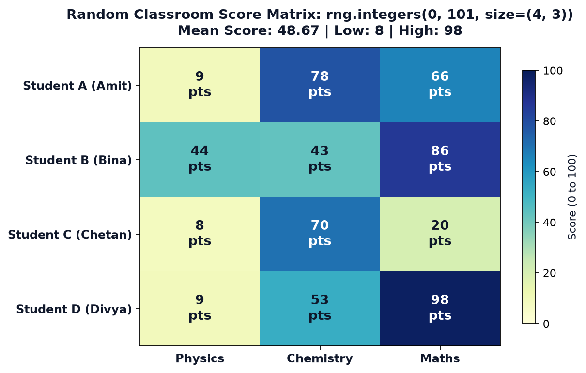
🌱 C. Seeds, State Advancement & Reproducibility
Data science aur machine learning mein Reproducibility (results ko dobara recreate kar pana) ek fundamental requirement hoti hai. Agar aapka research paper ya machine learning model kisi aur ke computer par alag accuracy de, to use peer review mein reject kar diya jata hai.
Seed Kya Hota Hai?
Ek Seed PRNG algorithm ke mathematical formula ka initial starting input hota hai.
- Jab aap generator ko ek fixed seed (e.g.
42ya123) dete hain, to algorithm hamesha usi exact initial internal state se calculate karna start karta hai. - Har baar jab aap random draw karte hain (e.g.,
rng.integers()), to generator ka internal state mathematically aage badh jata hai (State Advance). Agli call naya random number deti hai. - Agar aap do separate generators ko bilkul same seed denge, to unka first draw, second draw, aur hundredth draw 100% exact match karega!
Example 1: Same Seed, Same Sequence Verification
import numpy as np # Do independent generators initialized with same seed 123 rng1 = np.random.default_rng(123) rng2 = np.random.default_rng(123) values1 = rng1.integers(0, 100, size=10) values2 = rng2.integers(0, 100, size=10) print("Generator 1 Sequence:", values1) print("Generator 2 Sequence:", values2) print("Are both sequences identical?:", np.array_equal(values1, values2))
Example 2: Continuing vs Resetting a Generator
Agar hum rng1 se dobara numbers draw karenge, to kya wahi aayenge? Bilkul nahi! Kyunki rng1 ka internal state already 10 steps advance ho chuka hai:
import numpy as np rng = np.random.default_rng(123) draw_1 = rng.integers(0, 100, size=5) draw_2 = rng.integers(0, 100, size=5) print("Draw 1 (State S0 -> S1):", draw_1) print("Draw 2 (State S1 -> S2):", draw_2) print("Match?:", np.array_equal(draw_1, draw_2)) # Naya generator create karte hain original seed 123 ke saath rng_fresh = np.random.default_rng(123) fresh_draw = rng_fresh.integers(0, 100, size=5) print("Fresh draw with seed 123:", fresh_draw) print("Matches Draw 1?:", np.array_equal(draw_1, fresh_draw))
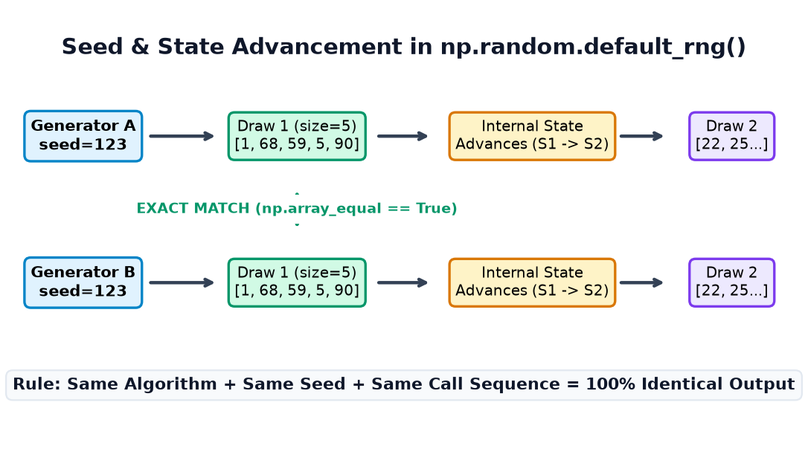
📏 D. Continuous Uniform Distribution
Ek Continuous Uniform Distribution mein kisi specified interval [low, high) ke andar har sub-interval of equal length ki occur hone ki probability density barabar hoti hai.
f(x) = 1 / (high - low) for low ≤ x < high
Iska theoretical mean interval ka exact midpoint hota hai:
(low + high) / 2.
Example 1: Simulating Random Customer Waiting Times
Ek customer support queue mein waiting time 0 se 10 minutes ke beech uniformly distributed hai:
import numpy as np rng = np.random.default_rng(42) # 10,000 simulated waiting times between 0.0 and 10.0 minutes wait_times = rng.uniform(low=0.0, high=10.0, size=10000) print("Sample Size:", len(wait_times)) print("First 5 waiting times:", np.round(wait_times[:5], 3)) print("Theoretical Midpoint Mean:", 5.0) print("Empirical Sample Mean:", round(float(wait_times.mean()), 3)) print("Sample Min:", round(float(wait_times.min()), 3)) print("Sample Max:", round(float(wait_times.max()), 3))
Example 2: Illustrative Product Pricing Simulation & Density
E-commerce testing ke liye hum fictional product discount prices simulate kar rahe hain between $50 aur $150:
import numpy as np rng = np.random.default_rng(42) prices = rng.uniform(low=50.0, high=150.0, size=25000) print("Expected Mean:", (50.0 + 150.0) / 2) print("Observed Sample Mean:", round(float(prices.mean()), 2)) print("Theoretical PDF Height: 1 / (150 - 50) =", 1 / 100)
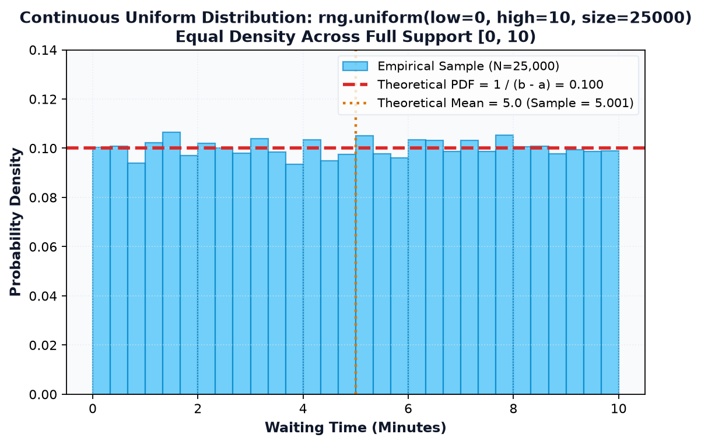
🔔 E. Normal (Gaussian) Distribution
Normal Distribution (Bell Curve) statistics aur machine learning ki sabse famous aur widely-used continuous distribution hai. Central Limit Theorem ke anusaar, jab bahut saare independent random factors combine hote hain, to unka sum ya average normal curve jaisa ban jata hai.
data = rng.normal(loc=mean, scale=standard_deviation, size=sample_size)
loc: Distribution ka center ya Mean (μ). Bell curve ka peak is point par hota hai.scale: Distribution ki spread ya Standard Deviation (σ). Badi scale ka matlab curve wider aur flatter hoga, chhoti scale ka matlab curve tall aur narrow hoga.- 68-95-99.7 Empirical Rule: Lagbhag 68.3% data
[μ - σ, μ + σ]mein aata hai, 95.4% data[μ - 2σ, μ + 2σ]mein aata hai, aur 99.7% data[μ - 3σ, μ + 3σ]mein aata hai. - Important Reality Check: Normal distribution mathematically unbounded hoti hai (interval
-∞to+∞). Iska matlab hai ki theoretical normal sample mein arbitrarily extreme values aa sakti hain. Real world scores (0-100) ko model karte waqt clipping ya bounded model use kiya jata hai.
Example 1: Simulated Laboratory Measurement Sensor Errors
import numpy as np rng = np.random.default_rng(42) # Sensor noise centered at 0 with standard deviation 1.5 errors = rng.normal(loc=0.0, scale=1.5, size=10000) print("Sample Mean Error (Target 0.0):", round(float(errors.mean()), 4)) print("Sample Std Deviation (Target 1.5):", round(float(errors.std()), 4)) print("Percentage within +/- 1.5 (±1 sigma):", round(float(((errors >= -1.5) & (errors <= 1.5)).mean() * 100), 2), "%")
Example 2: Fictional Classroom Scores Centered at 70
import numpy as np rng = np.random.default_rng(42) # Mean = 70, Std Dev = 10, Size = 30000 scores = rng.normal(loc=70.0, scale=10.0, size=30000) print("Sample Mean:", round(float(scores.mean()), 2)) print("Sample Standard Deviation:", round(float(scores.std()), 2)) print("Minimum observed:", round(float(scores.min()), 2)) print("Maximum observed:", round(float(scores.max()), 2))
110.15 aaya! Normal curve unbounded hoti hai isliye mathematically 100 se upar values generate ho sakti hain. Agar hum np.clip(scores, 0, 100) karte hain, to 100 par ek artificial spike banti hai jisse distribution exact normal nahi rehti. Is nuance ko samajhna professional data scientists ke liye essential hai!
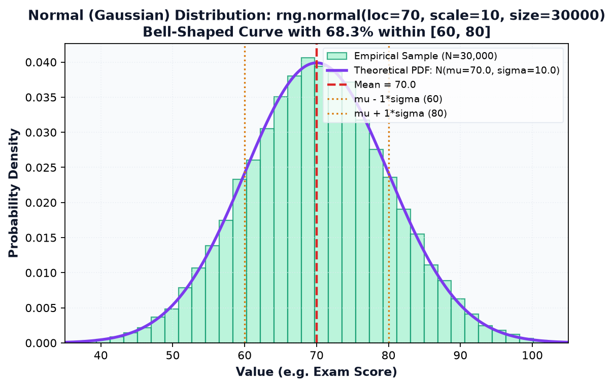
🍿 F. Sampling with rng.choice() & Weighted Selection
Data science mein aksar hume kisi collection ya array mein se randomly items pick karne hote hain. NumPy ka modern function rng.choice() dono scenarios handle karta hai: Equal Probability aur Weighted Probability.
selected = rng.choice(a, size=None, replace=True, p=None)
a: Input 1D array ya sequence jisme se pick karna hai. Agaraek integerNhai, to selectionnp.arange(N)se hoti hai.size: Kitne items pick karne hain (scalar integer ya tuple shape).replace=True(Default): Sampling With Replacement. Ek item dobara select ho sakta hai (jaise lottery draw jisme ball wapas dabba mein daali jaye).replace=False: Sampling Without Replacement. Ek baar select hone ke baad item dobara pick nahi hoga (jaise card deck se 5 cards deal karna).p: Probability distribution weights ka array jo 1.0 ke barabar sum hona chahiye (sum(p) == 1.0).
replace=False ho, to aap population ke size se zyada items select nahi kar sakte! Agar pool mein 10 questions hain aur aap size=12, replace=False mangenge, to NumPy turant ValueError: Cannot take a larger sample than population when 'replace=False' raise karega.
Example 1: Selecting 5 Unique Practice Questions for a Student
20 questions ke pool mein se bina kisi repetition ke 5 unique practice questions select karna:
import numpy as np rng = np.random.default_rng(42) # 20 question IDs ka array question_pool = np.array([f"Q{i:03d}" for i in range(1, 21)]) # replace=False ensures no question is repeated selected_quiz = rng.choice(question_pool, size=5, replace=False) print("Total Pool Size:", len(question_pool)) print("Selected 5 Unique Questions:", selected_quiz) print("Are all 5 unique?:", len(np.unique(selected_quiz)) == 5)
Example 2: Weighted Probability Selection
Imagine kijiye ek gaming app mein loot box tier probabilities hain:
Bronze: 50%, Silver: 30%, Gold: 15%, aur Platinum: 5%.
import numpy as np rng = np.random.default_rng(42) tiers = np.array(["Bronze", "Silver", "Gold", "Platinum"]) probabilities = np.array([0.50, 0.30, 0.15, 0.05]) # Verify probabilities sum to 1.0 within numerical tolerance assert np.isclose(probabilities.sum(), 1.0), "Probabilities must sum to 1" # 20,000 simulated draws with replacement draws = rng.choice(tiers, size=20000, replace=True, p=probabilities) for tier, target in zip(tiers, probabilities): count = (draws == tier).sum() empirical_p = count / len(draws) print(f"{tier:8s} | Expected: {target*100:5.1f}% | Observed: {empirical_p*100:5.2f}% (Count: {count})")
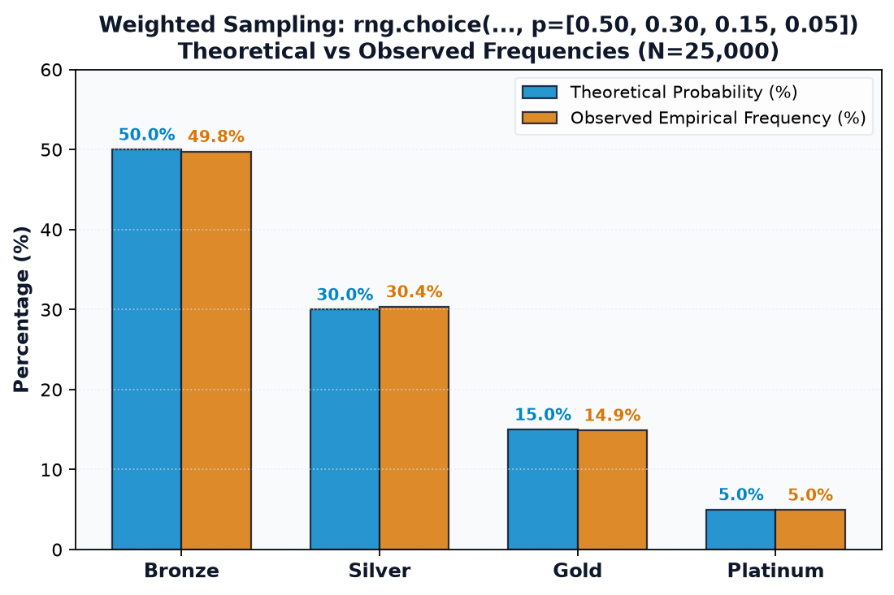
🔀 G. Shuffling, Permutations & ML Dataset Alignment
Data science mein machine learning models train karne se pehle dataset rows ko shuffle karna zaroori hota hai taaki gradient descent kisi particular class order se bias na ho. NumPy do methods provide karta hai:
| Method | Behavior | Return Value | Original Array Status |
|---|---|---|---|
rng.shuffle(arr) |
In-Place Modification | None |
Original array permanently mutate hota hai |
rng.permutation(arr) |
Safe Copy Creation | Fresh permuted array | Original array 100% untouched rehta hai |
Example 1: Safe Permutation vs In-Place Shuffling
import numpy as np rng = np.random.default_rng(42) original_questions = np.array([101, 102, 103, 104, 105]) # Method 1: permutation() returns a new randomized copy permuted = rng.permutation(original_questions) print("Original after permutation():", original_questions) print("Permuted copy:", permuted) # Method 2: shuffle() mutates the array in-place to_mutate = original_questions.copy() rng.shuffle(to_mutate) print("After in-place rng.shuffle():", to_mutate)
X aur label vector y ko independently shuffle mat kijiye:
rng.shuffle(X) # WRONG!rng.shuffle(y) # WRONG!Aisa karne se row 0 ke features kisi aur row ke label ke saath connect ho jayenge aur pura dataset corrupt ho jayega!
Correct Solution (Index Permutation):
indices = rng.permutation(len(X)) X_shuffled = X[indices] y_shuffled = y[indices]
Example 2: Permuting Aligned Student Records
import numpy as np rng = np.random.default_rng(42) student_ids = np.array([101, 102, 103, 104, 105]) exam_marks = np.array([85, 92, 78, 65, 90]) # Ek single shared permutation index generate karein perm_idx = rng.permutation(len(student_ids)) ids_shuffled = student_ids[perm_idx] marks_shuffled = exam_marks[perm_idx] print("Permuted Row Indices:", perm_idx) print("Shuffled IDs: ", ids_shuffled) print("Shuffled Marks:", marks_shuffled) # Verification: Student 102 must still have mark 92 assert marks_shuffled[ids_shuffled == 102][0] == 92 print("Alignment Verified: Student 102 is still correctly mapped to mark 92!")
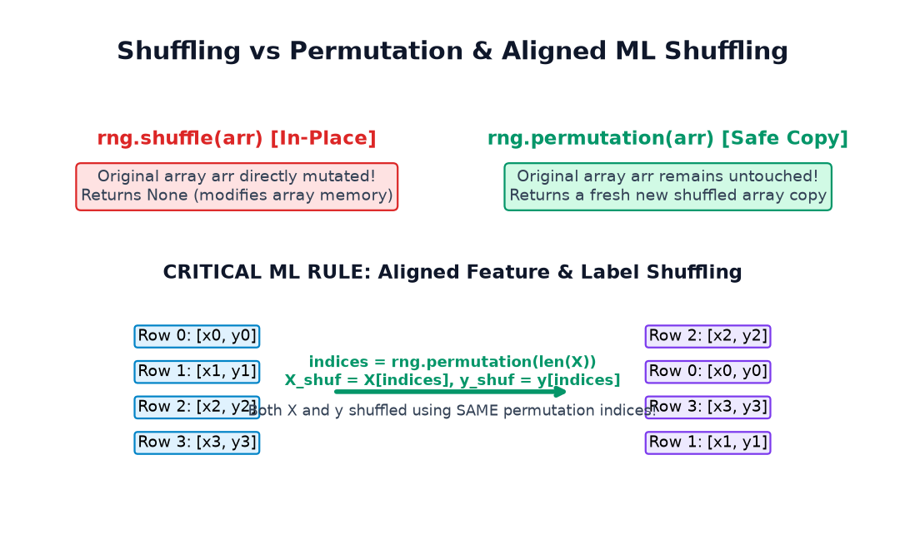
🪙 H. Binomial Distribution • Repeated Trials
Binomial Distribution ek discrete probability distribution hai jo n independent Bernoulli trials (jisme har trial ke sirf do outcomes hote hain: Success ya Failure) mein successful outcomes ki count ko model karti hai.
counts = rng.binomial(n=trials_per_experiment, p=success_probability, size=num_experiments)
n: Har experiment mein total kitne trials hain (e.g. 10 coin tosses).p: Har trial mein success ki probability (e.g. fair coin ke liye0.5).size: Pura experiment kitni baar repeat karna hai (e.g. 50,000 experiments).- Theoretical Properties:
Expected Mean $= n \times p$ (10 coin flips ke liye $= 10 \times 0.5 = 5.0$)
Variance $= n \times p \times (1 - p)$ ($= 10 \times 0.5 \times 0.5 = 2.5$)
Example 1: Simulating 10 Coin Flips Across 50,000 Experiments
import numpy as np rng = np.random.default_rng(42) # n=10 coin tosses per experiment, p=0.5, 50,000 repeated experiments heads_counts = rng.binomial(n=10, p=0.5, size=50000) print("Theoretical Expected Mean Heads:", 10 * 0.5) print("Observed Empirical Mean Heads:", round(float(heads_counts.mean()), 3)) print("Theoretical Variance:", 10 * 0.5 * 0.5) print("Observed Empirical Variance:", round(float(heads_counts.var()), 3)) print("Probability of getting exactly 5 heads:", round(float((heads_counts == 5).mean() * 100), 2), "%")
Example 2: Hypothetical Multiple-Choice Quiz Pass Simulation
Imagine kijiye 10 questions ka multiple-choice test hai jisme 4 options hain ($p = 0.25$ blind guessing probability). Passing score 6 ya usse zyada correct answers hain:
import numpy as np rng = np.random.default_rng(42) correct_answers = rng.binomial(n=10, p=0.25, size=50000) pass_probability = float((correct_answers >= 6).mean() * 100) print("Average correct answers by blind guessing:", round(float(correct_answers.mean()), 2)) print(f"Chance of passing (≥ 6 correct): {pass_probability:.3f}%")
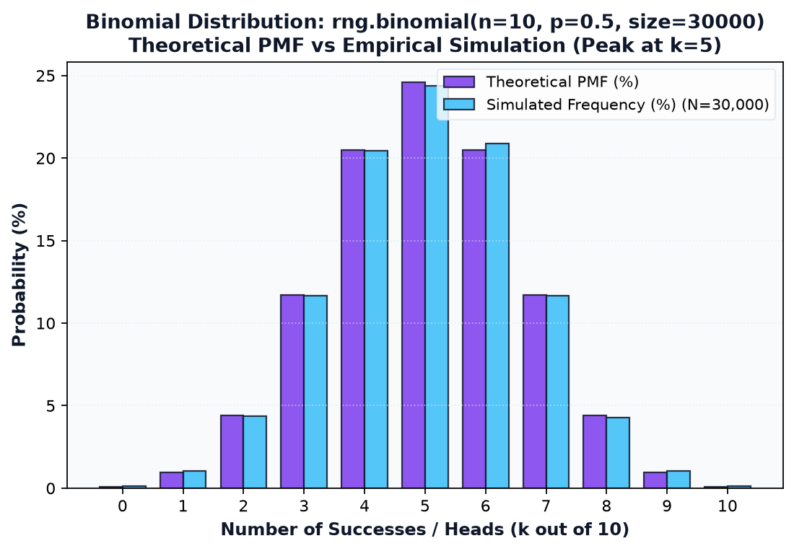
⏱️ I. Poisson Distribution • Events in Time Slices
Poisson Distribution ek discrete distribution hai jo kisi fixed time window ya space area mein hone wale independent events ki count ko model karti hai, jab hume sirf unka Average Rate (λ) pata ho.
counts = rng.poisson(lam=average_rate_per_interval, size=sample_size)
lam(λ): Ek fixed interval mein hone wale events ka expected average count.- Unique Poisson Property: Poisson distribution ka Mean aur Variance dono barabar hote hain:
Mean = Variance = λ - Real World Caveat: Real business data tabhi Poisson follow karta hai jab events completely independent ho aur rate time ke sath drastically change na ho (e.g. flash sales ke time rush clustering Poisson model ko violate karti hai).
Example 1: Simulating Customer Arrivals (λ = 4 per minute)
import numpy as np rng = np.random.default_rng(42) # Expected rate = 4 customers per minute, 50,000 minute intervals arrivals = rng.poisson(lam=4.0, size=50000) print("Assumed Rate (lambda):", 4.0) print("Observed Sample Mean:", round(float(arrivals.mean()), 3)) print("Observed Sample Variance:", round(float(arrivals.var()), 3)) print("Percentage of minutes with ZERO arrivals:", round(float((arrivals == 0).mean() * 100), 2), "%")
Example 2: Server API Support Requests
import numpy as np rng = np.random.default_rng(42) # Server capacity test: rate = 12 requests per second requests = rng.poisson(lam=12.0, size=10000) print("Mean requests/sec:", round(float(requests.mean()), 2)) print("Peak second observed:", requests.max(), "requests") print("Quiet second observed:", requests.min(), "requests")
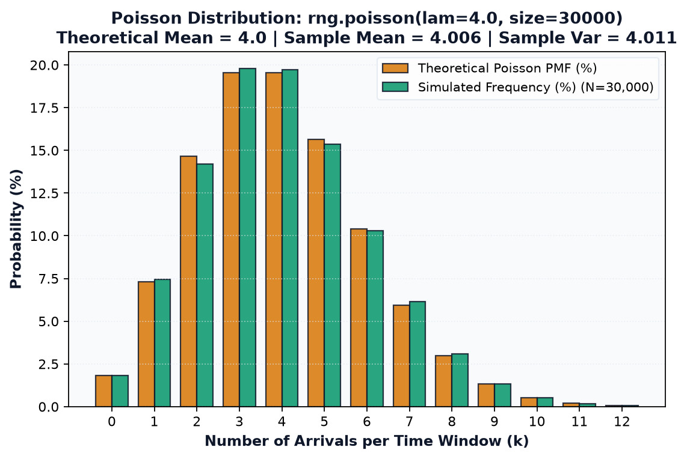
🚀 J. Simulating Probabilities with Monte Carlo Experiments
Monte Carlo Simulation ek aisi powerful technique hai jisme hum complex mathematical equations solve karne ke bajaye experiment ko hazaro ya lakho baar computer se simulate karte hain aur dekhte hain ki desired outcome kitni baar occur hua:
P(Event) ≈ (Number of successful simulated trials) / (Total trials N)
Law of Large Numbers ke anusaar, jaise-jaise sample size N badhta hai (100 → 1,000 → 10,000 → 100,000), simulated empirical probability true theoretical probability ke behad kareeb pahunch jati hai.
Example 1: Estimating P(Heads) Across Sample Sizes
import numpy as np rng = np.random.default_rng(42) sample_sizes = [100, 1000, 10000, 100000] print("Theoretical Probability P(Heads) = 0.5000\n") for n in sample_sizes: tosses = rng.integers(0, 2, size=n) # 0 = Tails, 1 = Heads emp_prob = float((tosses == 1).mean()) diff = abs(emp_prob - 0.5) print(f"N = {n:7,d} | Estimated P(Heads) = {emp_prob:.4f} | Absolute Error = {diff:.4f}")
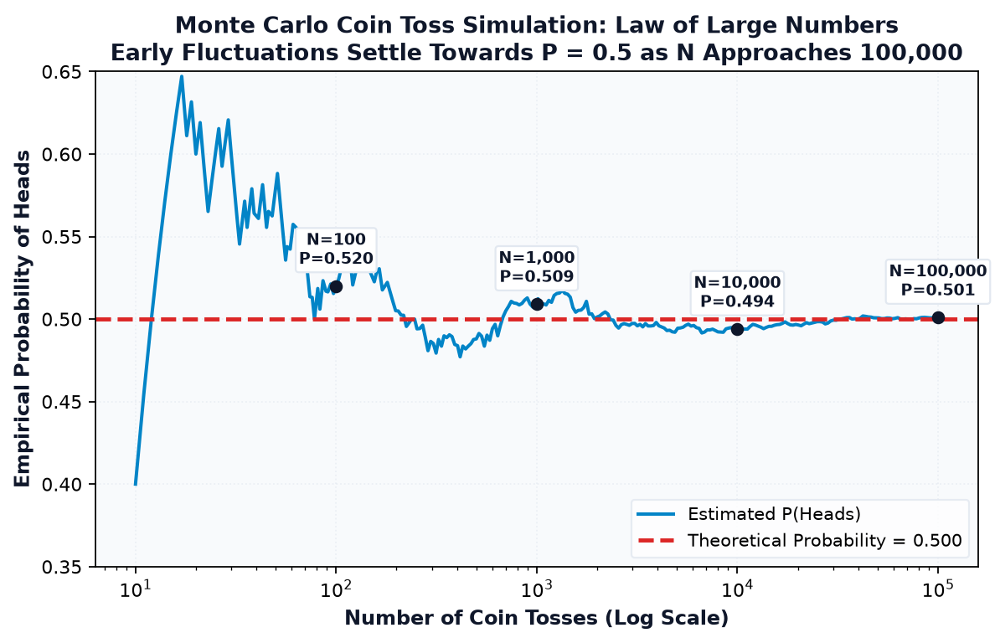
Example 2: Estimating P(Rolling a 6) with Fair Dice
import numpy as np rng = np.random.default_rng(42) sample_sizes = [100, 1000, 10000, 100000] theoretical_p = 1 / 6 print(f"Theoretical P(Rolling 6) = 1/6 ≈ {theoretical_p:.4f}\n") for n in sample_sizes: rolls = rng.integers(1, 7, size=n) emp_prob = float((rolls == 6).mean()) diff = abs(emp_prob - theoretical_p) print(f"N = {n:7,d} | Estimated P(6) = {emp_prob:.4f} | Absolute Error = {diff:.4f}")
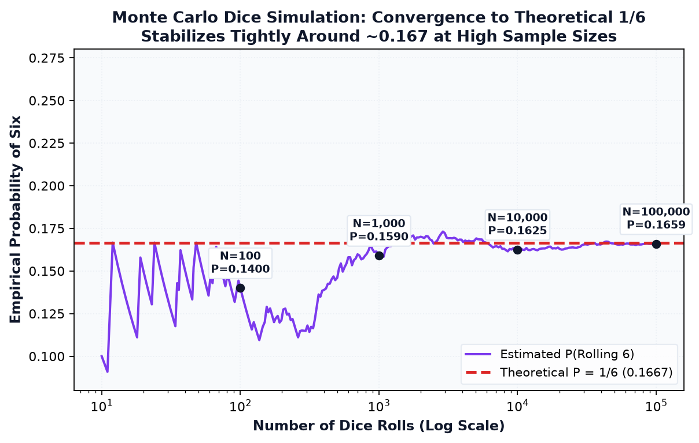
🌟 K. Additional Distributions • Exponential, Beta, Geometric, Multinomial
Basic normal aur uniform ke alawa data science, queuing theory aur machine learning mein 4 aur essential distributions frequently use hoti hain:
1. Exponential Distribution: Waiting Times Between Events
Agar events ek Poisson process ke tehat occur ho rahe hain, to do consecutive events ke beech ka Waiting Time Exponential Distribution follow karta hai. Iska primary property Memorylessness hai.
import numpy as np rng = np.random.default_rng(42) # scale = 1 / lambda = 2.0 minutes average waiting time wait_times = rng.exponential(scale=2.0, size=20000) print("Theoretical Mean:", 2.0) print("Observed Sample Mean:", round(float(wait_times.mean()), 3)) print("Percentage of waits > 4 mins:", round(float((wait_times > 4.0).mean() * 100), 2), "%")
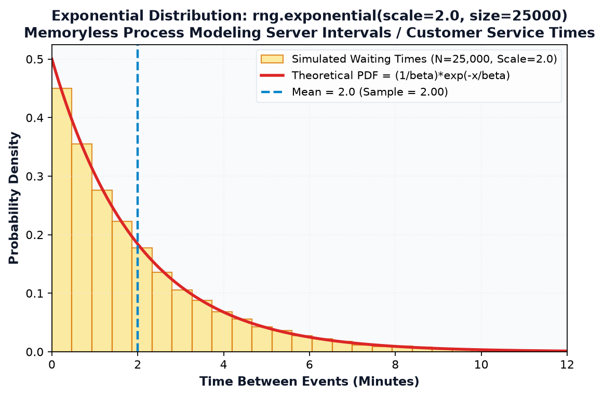
2. Beta Distribution: Probabilities in [0, 1]
Beta distribution ek continuous distribution hai jo strictly interval [0.0, 1.0] ke beech bounded hoti hai. Iska sabse bada use website conversion rates aur A/B testing ke Bayesian priors ko model karna hota hai.
import numpy as np rng = np.random.default_rng(42) # a=2, b=5 -> right skewed distribution in [0, 1] conversion_rates = rng.beta(a=2.0, b=5.0, size=20000) theo_mean = 2.0 / (2.0 + 5.0) # a / (a + b) = 2/7 ≈ 0.2857 print(f"Theoretical Mean: {theo_mean:.4f}") print("Observed Sample Mean:", round(float(conversion_rates.mean()), 4)) print("Min value in [0, 1]:", round(float(conversion_rates.min()), 4)) print("Max value in [0, 1]:", round(float(conversion_rates.max()), 4))
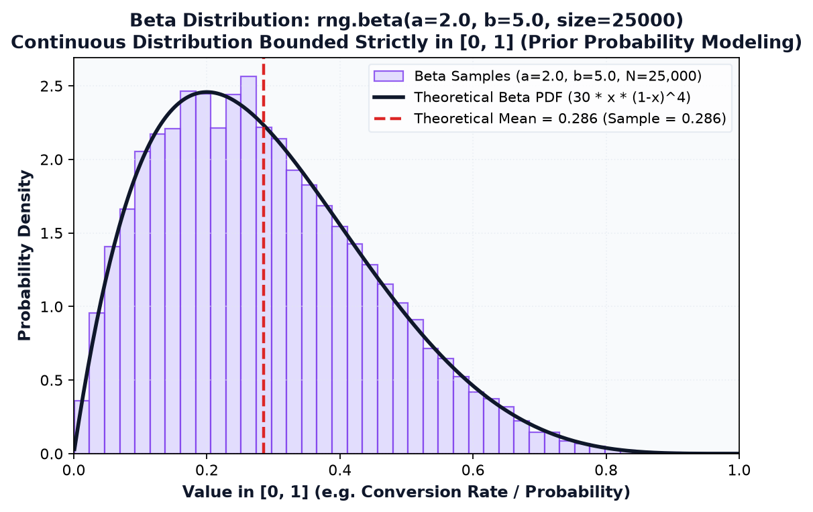
3. Geometric Distribution: Trials Until First Success
Geometric distribution yeh batati hai ki pehli success pane ke liye total kitne trials attempt karne padenge (e.g. kitne tries mein student pehla hard level clear karega).
import numpy as np rng = np.random.default_rng(42) # p = 0.20 success chance per attempt trials = rng.geometric(p=0.2, size=20000) print("Theoretical Expected Trials (1/p):", 1 / 0.2) print("Observed Sample Mean Trials:", round(float(trials.mean()), 3)) print("Percentage succeeding on 1st attempt:", round(float((trials == 1).mean() * 100), 2), "%")
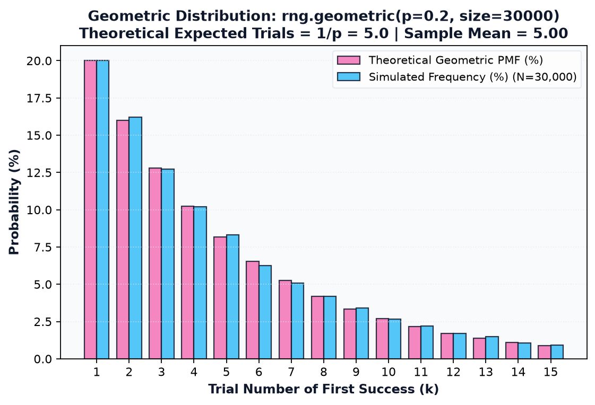
4. Multinomial Distribution: Multi-Category Counts
Multinomial distribution binomial distribution ka general version hai jab outcomes 2 se zyada categories mein fall karte hain (e.g. Mobile, Web, Desktop traffic). Total items ka sum hamesha conserved rehta hai.
import numpy as np rng = np.random.default_rng(42) # n=100 users partitioned into 3 categories with p = [0.2, 0.5, 0.3] user_groups = rng.multinomial(n=100, pvals=[0.2, 0.5, 0.3], size=5) print("5 Simulated Groups of 100 Users:\n", user_groups) print("Row Sums (Must all be exactly 100):", user_groups.sum(axis=1))
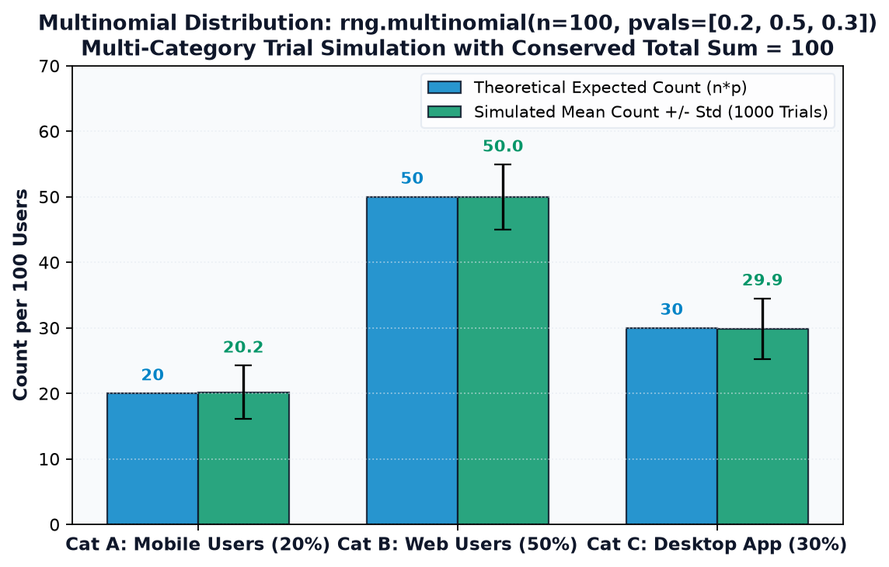
💼 L. 6 Real-Life Data Science Applications
Application 1: CodeVerse Practice Quiz Generator
Problem: Ek test platform ko student ke liye 50 questions ke pool mein se 5 unique questions pick karne hain.
import numpy as np rng = np.random.default_rng(2026) pool = np.array([f"CV-PY-{i:03d}" for i in range(1, 51)]) quiz = rng.choice(pool, size=5, replace=False) print("Student Practice Quiz:", quiz)
Application 2: Synthetic Classroom Exam Score Modeling
Problem: 500 students ke benchmark marks simulate karna with mean 72 aur standard deviation 12.
import numpy as np rng = np.random.default_rng(2026) raw = rng.normal(loc=72.0, scale=12.0, size=500) scores = np.clip(np.round(raw), 0, 100).astype(int) print(f"Mean: {scores.mean():.2f} | Median: {np.median(scores):.1f} | Std: {scores.std():.2f}")
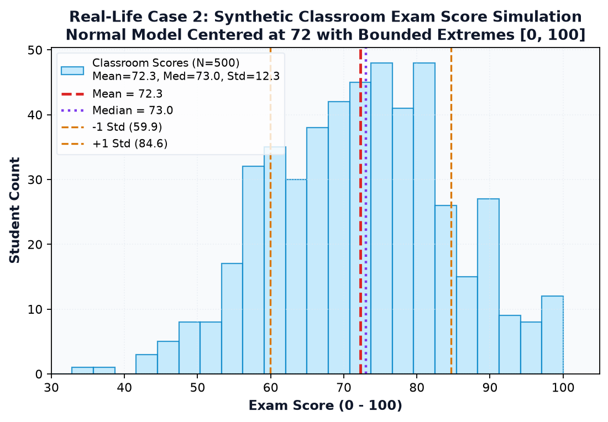
Application 3: Retail Customer Arrival Load Modeling
Problem: 8-hour workday (96 five-minute slots) mein average 5 customers/slot ke hisaab se customer footfall simulate karna.
import numpy as np rng = np.random.default_rng(42) arrivals = rng.poisson(lam=5.0, size=96) print("Total Footfall:", arrivals.sum(), "| Max 5-min rush:", arrivals.max())
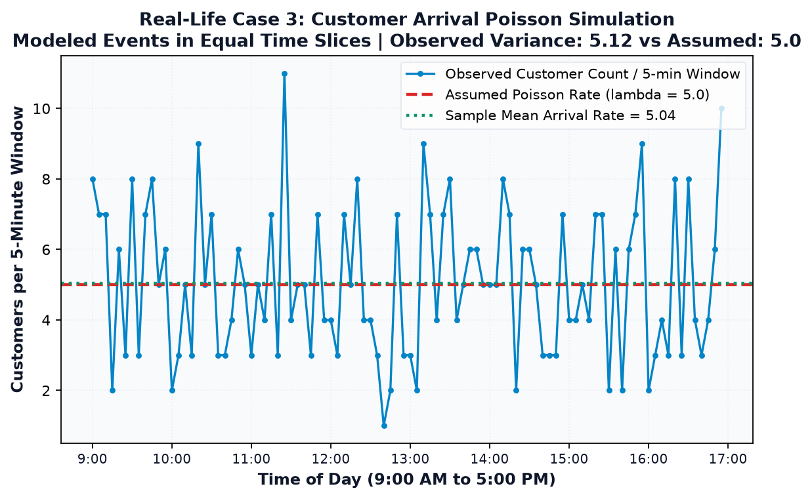
Application 4: A/B Testing Intuition & Sample Size Variability
Problem: Baseline (12%) vs Treatment (15%) click-through conversion rates across sample sizes.
import numpy as np rng = np.random.default_rng(42) cA_small = rng.binomial(1, 0.12, size=100).mean() cB_small = rng.binomial(1, 0.15, size=100).mean() cA_large = rng.binomial(1, 0.12, size=10000).mean() cB_large = rng.binomial(1, 0.15, size=10000).mean() print(f"Small (N=100): Group A={cA_small*100:.1f}%, Group B={cB_small*100:.1f}%") print(f"Large (N=10,000): Group A={cA_large*100:.2f}%, Group B={cB_large*100:.2f}%")
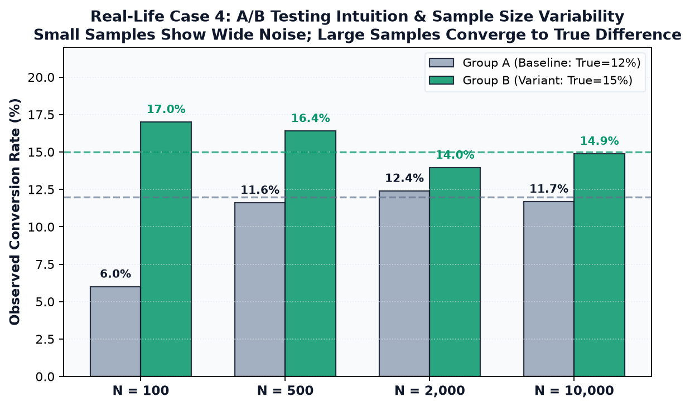
Application 5: Monte Carlo Sample Size Stability
Problem: Demonstrating how sample size stabilizes estimates from high noise to smooth convergence.
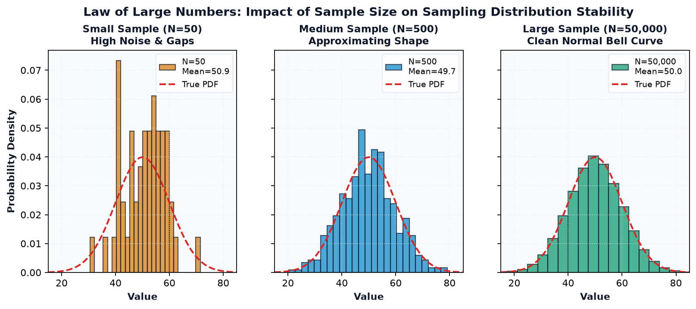
Application 6: Unit Testing ML Pipeline with Reproducible Synthetic Inputs
Problem: Ek image normalization function ko verify karna with a fixed deterministic seed.
import numpy as np def normalize_features(arr): return (arr - arr.mean(axis=0)) / (arr.std(axis=0) + 1e-7) # Unit test with fixed seed ensures test runs identically on every developer's machine rng = np.random.default_rng(12345) synthetic_data = rng.normal(loc=50.0, scale=15.0, size=(1000, 4)) normed = normalize_features(synthetic_data) assert np.allclose(normed.mean(axis=0), 0.0, atol=1e-5) assert np.allclose(normed.std(axis=0), 1.0, atol=1e-5) print("Unit Test PASSED: Normalized synthetic features have zero mean and unit variance!")
🚨 M. 15 Common Traps & 8 Code Debugging Scenarios
15 Common Traps Every Beginner Should Avoid
- Legacy Global Seed Trap:
np.random.seed(42)use karna jo global state corrupt karta hai. Modernnp.random.default_rng(42)use karein. - Upper Bound Exclusion Trap:
rng.integers(1, 6)se kabhi 6 nahi aayega! Upper bound7de yaendpoint=Trueset karein. - Re-creating Generators in Loops: Loop ke andar bar-bar
np.random.default_rng(42)call karne se har iteration mein wahi first number repeat ho jata hai! - Assuming Cryptographic Security: NumPy random functions passwords ya security tokens ke liye nahi hain.
- Independent Feature-Label Shuffling:
Xauryko alag-alag shuffle karne se dataset corrupt ho jata hai. Shared index permutation use karein. - Sampling Without Replacement Overflow: Population size se zyada items bina replacement ke mangne par
ValueErroraata hai. - Invalid Probability Sum in Choice:
parray ka sum strictly 1.0 hona chahiye (numerical tolerance ke andar). - In-place
shuffle()Return Value Trap:result = rng.shuffle(arr)likhne seresultmeinNonechala jata hai! - Small Sample Overconfidence: 10 tosses mein 7 heads dekh kar coin ko biased declare karna. Law of large numbers requires large samples.
- Assuming Normal Values Are Bounded: Normal distribution unbounded hoti hai; marks ya prices simulate karte waqt extremes aa sakte hain.
- Mistaking Synthetic Data for Ground Truth: Model assumptions ke mutabiq synthetic data banta hai; yeh real human behavior ka substitute nahi hai.
- Ignoring Poisson Variance Equality: Agar data ka variance uske mean se bahut zyada hai (overdispersion), to Poisson model fail ho jata hai.
- Assuming Exact Match Across Major Library Versions: Different NumPy versions ya algorithms bit-for-bit identical streams guarantee nahi karte.
- Forgetting
rngAdvances State: Ek hi generator par do consecutive random calls alag-alag values dengi. - Forgetting Seed in Debugging: Fixed seed na dene par bugs non-reproducible (heisenbugs) ban jate hain.
8 Practical Code Debugging Scenarios
Bug 1: In-Place Shuffle Returns None
rng = np.random.default_rng(42) arr = np.array([1, 2, 3, 4, 5]) shuffled = rng.shuffle(arr) print(shuffled) # Prints None!
Correction: rng.shuffle() array ko in-place modify karta hai. Agar new copy chahiye to rng.permutation() use karein:
shuffled = rng.permutation(arr) # Returns array copy!
Bug 2: Upper Bound Exclusion in Dice Rolling
rolls = rng.integers(1, 6, size=1000) print("6 appeared?:", 6 in rolls) # False! 6 is never rolled
Correction: Upper bound 7 karein ya endpoint=True set karein:
rolls = rng.integers(1, 7, size=1000) # Range 1 to 6 inclusive
Bug 3: Re-seeding Generator Inside Loop
for _ in range(5): rng_loop = np.random.default_rng(42) print(rng_loop.integers(1, 100)) # Prints 9 every single iteration!
Correction: Generator ko loop se pehle bahar ek baar initialize karein:
rng_outer = np.random.default_rng(42) results = [rng_outer.integers(1, 100) for _ in range(5)]
Bug 4: Oversampling Without Replacement
items = np.array([10, 20, 30]) draw = rng.choice(items, size=5, replace=False) # Raises ValueError!
Correction: replace=True specify karein agar sample size population se bada hai:
draw = rng.choice(items, size=5, replace=True)
Bug 5: Independent Feature-Label Shuffling
rng.shuffle(X) # Mismatches X rows! rng.shuffle(y) # y shuffled with completely different order!
Correction: Shared row index permutation use karein:
idx = rng.permutation(len(X)) X_clean, y_clean = X[idx], y[idx]
Bug 6: Probabilities Do Not Sum to 1 in rng.choice()
p = [0.5, 0.3, 0.1] # Sum is 0.9 -> ValueError: probabilities do not sum to 1 rng.choice(["A", "B", "C"], p=p)
Correction: Weights ko sum se divide karke normalize karein:
p_norm = np.array(p) / np.sum(p) rng.choice(["A", "B", "C"], p=p_norm)
Bug 7: Silent Array Mutation with Shared Reference
raw_data = np.array([10, 20, 30]) copied_view = raw_data rng.shuffle(copied_view) # Accidentally mutates raw_data as well!
Correction: True explicit deep copy banayein raw_data.copy():
clean_copy = raw_data.copy() rng.shuffle(clean_copy)
Bug 8: Negative Probability in Distributions
rng.poisson(lam=-5.0) # ValueError: lam < 0 is mathematically invalid
Correction: Rate aur probabilities non-negative ensure karein:
rng.poisson(lam=max(0.0, rate))
🗺️ N. Complete NumPy Random Architecture Map
Modern NumPy random generation ko visualize karne ke liye niche diya gaya complete architecture map follow karein:
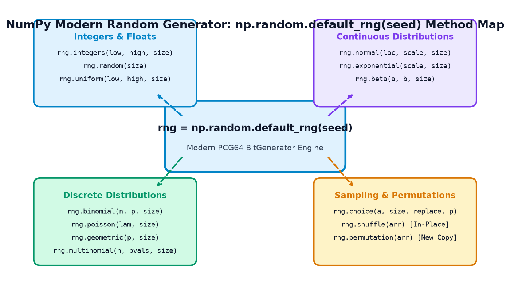
✅ O. 35 Practice Questions & Interactive Solutions
Apne concepts test karein! Har question ke niche collapsible solution provided hai:
Part 1: Output Prediction Questions (10 Questions)
Q1: rng = np.random.default_rng(42); print(rng.integers(1, 5, size=3)) ka output kya hoga?
Show Answer & Explanation
[1 4 3]Explanation: Seed 42 par 1 se 4 (5 is excluded) ke beech pehle 3 integers 1, 4, 3 generate hote hain.
Q2: rng = np.random.default_rng(42); print(type(rng.integers(1, 10))) ka type kya hoga?
Show Answer & Explanation
<class 'numpy.int64'>Explanation: Jab
size argument omit kiya jata hai, to scalar NumPy integer return hota hai, array nahi.
Q3: arr = np.array([1, 2, 3]); res = rng.shuffle(arr); print(res) ka output kya hoga?
Show Answer & Explanation
NoneExplanation:
shuffle() array ko in-place mutate karta hai aur Python mein None return karta hai.
Q4: rng = np.random.default_rng(42); vals = rng.random(4); print(vals.min() >= 0.0 and vals.max() < 1.0)?
Show Answer & Explanation
TrueExplanation:
rng.random() strictly interval [0.0, 1.0) mein values return karta hai.
Q5: rng1 = np.random.default_rng(99); rng2 = np.random.default_rng(99); print(np.array_equal(rng1.random(5), rng2.random(5)))?
Show Answer & Explanation
TrueExplanation: Dono generators same seed 99 se initialize huye hain, isliye unka first draw exactly identical hoga.
Q6: rng = np.random.default_rng(42); print(rng.integers(1, 10, endpoint=True).max() == 10) with high sample size?
Show Answer & Explanation
TrueExplanation:
endpoint=True specify karne par upper limit 10 inclusive ban jati hai.
Q7: rng.choice([10, 20, 30], size=5, replace=False) execute karne par kya output aayega?
Show Answer & Explanation
ValueError: Cannot take a larger sample than population when 'replace=False'Explanation: 3 elements ki population se 5 elements bina replacement ke nahi liye ja sakte.
Q8: rng.multinomial(n=50, pvals=[0.4, 0.6], size=3).sum(axis=1) ka output kya hoga?
Show Answer & Explanation
[50 50 50]Explanation: Multinomial trial mein har row ka sum exactly
n=50 rehta hai.
Q9: rng = np.random.default_rng(42); print(rng.uniform(5.0, 15.0, size=1000).mean()) kis value ke kareeb hoga?
Show Answer & Explanation
≈ 10.0Explanation: Uniform continuous distribution ka mean exact midpoint
(5 + 15) / 2 = 10.0 hota hai.
Q10: rng = np.random.default_rng(42); print(rng.poisson(lam=0.0, size=5))?
Show Answer & Explanation
[0 0 0 0 0]Explanation: Rate λ = 0 par events ki probability strictly zero hoti hai.
Part 2: Coding Exercises (8 Questions)
E1: Ek function likhiye jo 1 se 100 ke beech 15 unique random lottery numbers return kare.
Show Answer & Explanation
def generate_lottery(seed=None):
rng = np.random.default_rng(seed)
return rng.choice(np.arange(1, 101), size=15, replace=False)
E2: Ek function likhiye jo 2D feature matrix X aur target y ko synchronously shuffle kare.
Show Answer & Explanation
def shuffle_dataset(X, y, seed=None):
rng = np.random.default_rng(seed)
idx = rng.permutation(len(X))
return X[idx], y[idx]
E3: Ek fair dice ko $100,000$ baar roll karke rolling a 6 ki empirical probability calculate karein.
Show Answer & Explanation
rng = np.random.default_rng(42)
rolls = rng.integers(1, 7, size=100000)
p_six = (rolls == 6).mean()
print(f"P(6) = {p_six:.4f}") # ~ 0.1667
E4: rng.normal() se 1000 student heights (μ=170 cm, σ=8 cm) generate karein aur percentage within ±1σ calculate karein.
Show Answer & Explanation
rng = np.random.default_rng(42)
heights = rng.normal(loc=170.0, scale=8.0, size=1000)
pct_1sigma = ((heights >= 162.0) & (heights <= 178.0)).mean() * 100
print(f"Within 1-sigma: {pct_1sigma:.1f}%") # ~68.3%
E5: Weighted selection implement karein jisme options ["Pass", "Fail"] ho with probabilities [0.85, 0.15] for 100 students.
Show Answer & Explanation
rng = np.random.default_rng(42)
results = rng.choice(["Pass", "Fail"], size=100, p=[0.85, 0.15])
print("Pass count:", (results == "Pass").sum())
E6: Binomial simulation se 20 coins ko 10,000 baar flip karein aur exactly 10 heads aane ki probability measure karein.
Show Answer & Explanation
rng = np.random.default_rng(42)
heads = rng.binomial(n=20, p=0.5, size=10000)
print(f"P(10 heads) = {(heads == 10).mean():.4f}") # ~ 0.1762
E7: Poisson distribution se average 8 calls/hour ke hisaab se 24 hours ke call traffic simulate karein.
Show Answer & Explanation
rng = np.random.default_rng(42)
daily_calls = rng.poisson(lam=8.0, size=24)
print("Total calls in 24 hrs:", daily_calls.sum())
E8: Reproducibility verify karein do generators create karke with seed 777 aur check karein unka 2D random normal array identical hai ya nahi.
Show Answer & Explanation
g1 = np.random.default_rng(777)
g2 = np.random.default_rng(777)
a1 = g1.normal(0, 1, size=(3, 3))
a2 = g2.normal(0, 1, size=(3, 3))
print("Identical:", np.array_equal(a1, a2)) # True
Part 3: Debugging Questions (6 Questions)
D1: Code: rng.integers(1, 10, size=5) kabhi 10 return nahi karta. Kyun?
Show Answer & Explanation
rng.integers() ka upper bound default exclusive hota hai. Fix: rng.integers(1, 11, size=5) ya endpoint=True use karein.
D2: Code: shuffled = rng.shuffle(data) print karne par None print hota hai. Fix kya hai?
Show Answer & Explanation
shuffle() returns None. Fix: shuffled = rng.permutation(data) use karein ya seedhe print(data) karein.
D3: Code: rng.choice(arr, p=[0.4, 0.4]) crash kar jata hai. Kyun?
Show Answer & Explanation
D4: Code: np.random.seed(42) likhne ke baad team member bol raha hai modern code nahi hai. Kyun?
Show Answer & Explanation
np.random.seed() legacy global function hai. Modern code mein rng = np.random.default_rng(42) use karna chahiye.
D5: Code: Loop ke andar for i in range(10): rng = np.random.default_rng(123); val = rng.random() har baar same value de raha hai. Kyun?
Show Answer & Explanation
D6: Code: rng.choice(range(5), size=10, replace=False) raises ValueError. Kyun?
Show Answer & Explanation
replace=True set karein.
Part 4: Multiple-Choice Questions (8 Questions)
M1: NumPy ka modern recommended random number generator constructor konsa hai?
A) np.random.RandomState()
B) np.random.default_rng()
C) np.random.seed()
D) np.random.create()
Show Answer & Explanation
np.random.default_rng() is the modern standard since NumPy 1.17.M2: Modern NumPy PRNG under-the-hood konsa bit generator use karta hai?
A) Mersenne Twister (MT19937)
B) PCG64
C) Linear Congruential Generator (LCG)
D) SHA-256
Show Answer & Explanation
M3: rng.random(size=5) kis interval mein numbers return karta hai?
A) [0.0, 1.0] (dono inclusive)
B) (0.0, 1.0) (dono exclusive)
C) [0.0, 1.0) (0 inclusive, 1 exclusive)
D) [-1.0, 1.0]
Show Answer & Explanation
M4: Konsa method array ko in-place modify karta hai without creating a copy?
A) rng.permutation()
B) rng.shuffle()
C) rng.choice()
D) rng.integers()
Show Answer & Explanation
rng.shuffle() modifies in-place and returns None.M5: Normal distribution mein mean aur spread control karne wale parameters konse hain?
A) low aur high
B) loc aur scale
C) mean aur variance
D) n aur p
Show Answer & Explanation
loc is mean (μ), scale is standard deviation (σ).M6: Poisson distribution ka unique mathematical property kya hai?
A) Mean = Variance = λ
B) Mean > Variance hamesha
C) Median strictly zero hota hai
D) Continuous bell curve hoti hai
Show Answer & Explanation
M7: ML dataset mein $X$ aur $y$ ko shuffle karne ka safe approach kya hai?
A) rng.shuffle(X); rng.shuffle(y)
B) idx = rng.permutation(len(X)); X[idx], y[idx]
C) np.random.seed(42); X = X[::-1]
D) y = rng.choice(y)
Show Answer & Explanation
M8: Law of Large Numbers ka core principle kya hai?
A) Small samples hamesha exact theoretical result dete hain
B) Large sample size hone par empirical probability theoretical probability par converge karti hai
C) Randomness completely disappear ho jati hai
D) Computers true cryptographic randomness produce karte hain
Show Answer & Explanation
Part 5: Real-Life Mini-Challenges (3 Challenges)
Challenge 1: CodeVerse Quiz Attempt Simulator
Ek classroom mein 30 students hain. Har student ko 50 questions mein se 10 randomized unique questions assign karne ka Python script likhiye.
Show Answer & Explanation
rng = np.random.default_rng(2026)
pool = np.array([f"Q_{i:03d}" for i in range(1, 51)])
student_papers = {f"Student_{s}": rng.choice(pool, size=10, replace=False) for s in range(1, 31)}
print("Student 1 Questions:", student_papers["Student_1"])
Challenge 2: Monte Carlo Pi Approximation
Unit square $[0, 1] \times [0, 1]$ mein $100,000$ random $(x, y)$ points generate karke circle quadrant $x^2 + y^2 \le 1$ se $\pi$ ki value estimate karein ($\pi \approx 4 \times \text{inside} / N$).
Show Answer & Explanation
rng = np.random.default_rng(42)
N = 100000
x = rng.random(N)
y = rng.random(N)
inside = (x**2 + y**2 <= 1.0).sum()
pi_est = 4.0 * inside / N
print(f"Estimated Pi: {pi_est:.4f} (Actual: {np.pi:.4f})") # ~3.1416
Challenge 3: E-Commerce Flash Sale Queue Overload Model
Poisson rate $\lambda = 15$ requests/second assume karke 60 seconds ka flash sale simulate karein aur check karein server capacity ($22$ requests/sec) kitni baar exceed hui.
Show Answer & Explanation
rng = np.random.default_rng(42)
traffic = rng.poisson(lam=15.0, size=60)
overload_seconds = (traffic > 22).sum()
print("Seconds server overloaded:", overload_seconds)
🛠️ P. Capstone Mini-Project: Smart Random Lab • Simulation & Probability Explorer
Yeh capstone mini-project ek complete, self-contained Python application hai jo Topic 17 ke saare 18 critical requirements ko ek single executable pipeline mein combine karta hai.
import numpy as np def run_smart_random_lab(): print("=" * 65) print(" SMART RANDOM LAB: SIMULATION & PROBABILITY EXPLORER") print("=" * 65) # 1. Initialize modern RNG with fixed seed rng = np.random.default_rng(2026) print("\n[1] Modern Generator Initialized (Seed = 2026)") # 2. Integers and Floats ints = rng.integers(1, 101, size=5) floats = np.round(rng.random(5), 4) print(" Random Integers [1, 100]:", ints) print(" Random Floats in [0, 1): ", floats) # 3. Seed Reproducibility Test rA = np.random.default_rng(999) rB = np.random.default_rng(999) match = np.array_equal(rA.integers(1, 50, size=5), rB.integers(1, 50, size=5)) print("\n[2] Reproducibility Verification:") print(" Do two generators with seed 999 match exactly?:", match) # 4. Classroom Score Simulation scores = np.clip(np.round(rng.normal(loc=72.0, scale=12.0, size=60)), 0, 100).astype(int) print("\n[3] Synthetic Classroom Score Dataset (N=60):") print(f" Mean: {scores.mean():.2f} | Median: {np.median(scores):.1f} | Std Dev: {scores.std():.2f}") # 5. Quiz Question Sampling Without Replacement q_pool = np.array([f"CV-Q{i:02d}" for i in range(1, 31)]) selected_q = rng.choice(q_pool, size=6, replace=False) print("\n[4] Unique Quiz Selection (No Repetition):") print(" Selected 6 Questions:", selected_q) # 6. Aligned Dataset Permutation stu_ids = np.array([101, 102, 103, 104, 105]) grades = np.array(["A", "B", "A+", "C", "B+"]) perm = rng.permutation(len(stu_ids)) print("\n[5] Machine Learning Aligned Dataset Shuffling:") print(" Shuffled IDs: ", stu_ids[perm]) print(" Shuffled Grades:", grades[perm]) # 7. Monte Carlo Coin & Dice Convergence coin_p = float((rng.integers(0, 2, size=50000) == 1).mean()) dice_p = float((rng.integers(1, 7, size=50000) == 6).mean()) print("\n[6] Monte Carlo Probability Convergence (N=50,000):") print(f" P(Coin Heads) ≈ {coin_p:.4f} (Theoretical: 0.5000 | Diff: {abs(coin_p - 0.5):.4f})") print(f" P(Dice Six) ≈ {dice_p:.4f} (Theoretical: 0.1667 | Diff: {abs(dice_p - 1/6):.4f})") # 8. Poisson & Binomial Metrics poi = rng.poisson(lam=4.5, size=20000) binom = rng.binomial(n=10, p=0.5, size=20000) print("\n[7] Distribution Moments Verification:") print(f" Poisson lambda=4.5 -> Mean: {poi.mean():.3f} | Variance: {poi.var():.3f}") print(f" Binomial n=10,p=0.5 -> Mean: {binom.mean():.3f} | Variance: {binom.var():.3f}") # 9. Safe Error Handling Demo print("\n[8] Safe Exception Handling Test:") try: rng.choice([1, 2], size=5, replace=False) except ValueError as e: print(" Caught expected invalid sampling error safely:", e) print("\n" + "=" * 65) print(" SMART RANDOM LAB SIMULATION COMPLETED SUCCESSFULLY!") print("=" * 65) if __name__ == "__main__": run_smart_random_lab()
📝 Q. Summary & Production Cheatsheet
NumPy Topic 17: Random Number Generator ko master karne ke liye yeh core takeaways yaad rakhein:
| Concept / Task | Recommended Modern Syntax | Critical Caution / Tip |
|---|---|---|
| Initialize Generator | rng = np.random.default_rng(seed) |
Never use legacy np.random.seed() |
| Random Integers | rng.integers(low, high, size) |
high is exclusive by default; use endpoint=True if inclusive |
| Standard Floats | rng.random(size) |
Values in [0.0, 1.0) |
| Continuous Uniform | rng.uniform(low, high, size) |
Flat PDF, mean is midpoint (low + high) / 2 |
| Normal (Gaussian) | rng.normal(loc, scale, size) |
Unbounded distribution; 68.3% within 1-sigma |
| Selection / Sampling | rng.choice(arr, size, replace, p) |
For replace=False, size cannot exceed len(arr) |
| In-Place Shuffling | rng.shuffle(arr) |
Mutates array directly, returns None |
| Safe Permutation | perm = rng.permutation(arr) |
Returns new randomized copy, preserves original |
| ML Synchronized Shuffle | idx = rng.permutation(len(X)); X[idx], y[idx] |
Never shuffle X and y independently! |
| Binomial Trials | rng.binomial(n, p, size) |
Mean $= n \cdot p$, Variance $= n \cdot p \cdot (1 - p)$ |
| Poisson Events | rng.poisson(lam, size) |
Mean $=$ Variance $= \lambda$ |
| Monte Carlo Simulation | emp_p = (draws == target).mean() |
Law of Large Numbers ensures convergence at high N |